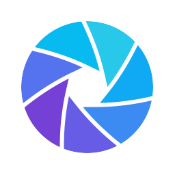

Lumia
Scroll Capture
Lumia isn't open
Open the app to capture
Couldn't start capture
Capture visible area
Capture full page
Capture part of page
Allow site access
For Lumia's hotkey and tab previews
Allow